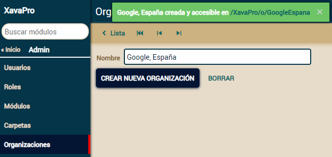
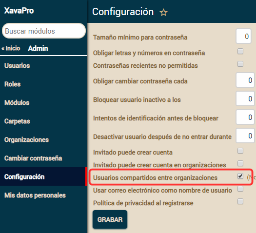
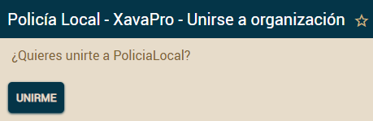

Table of Contents
Multiempresa/multimunicipio
La multitenencia (multitenancy en inglés) te permite desplegar una aplicación una vez y esta única aplicación puede servir a varias empresas al mismo tiempo, cada una con sus propios datos. Esto es perfecto para SaaS (Software como Servicio), así puedes desplegar tu aplicación en la nube y alquilarla a muchos clientes. También es muy útil para hacer aplicaciones multimunicipio para las administraciones públicas (como las diputaciones en España). Incluso si no estás interesado en hacer aplicaciones multiempresa tener conjuntos de datos aislados puede ser interesante para muchas cosas, como tener una base de datos de producción y otra de pruebas sin esfuerzo.XavaPro incluye soporte de multiempresa y multimunicipio.
Crear una nueva organización
Para soportar multiempresa XavaPro usa organizaciones. Encontrarás el módulo Organizaciones en la carpeta Admin. Este módulo te permite crear una nueva organización simplemente especificando su nombre y pulsando un botón:
Después de pulsar el botón "Crear nueva organización" la nueva organización está lista para ser usada en la URL especificada. El proceso de creación crea un esquema nuevo en la base de datos, todas las tablas de la aplicación y llena las tablas de administración con los datos iniciales.
Puedes ir a la URL de la nueva empresa (/TuAplicacion/o/TuEmpresa) directamente o bien a la URL de la aplicación (/TuAplicacion). En este último caso el formulario de identificación pregunta por la empresa usando un combo:

Cada organización tiene sus propios usuarios, contraseñas, roles y permisos, por supuesto.
Personalización
La sintaxis para crear y eliminar esquemas depende de tu base de datos. Puedes especificar la sintaxis para tu base de datos con las propiedades createSchema y dropSchema (nueva en v5.7.1) en naviox.properties:# Multiempresa: Sólo disponible en XavaPro (http://www.openxava.org/xavapro)
# La sentencia para crear el esquema al crear una nueva organización
# Esta es la de por defecto
createSchema=CREATE SCHEMA ${schema}
# Estas son por base de datos, puedes añadir la tuya usando el nombre de la base de datos
# como sufijo (realmente la primera palabra de connection.getMetaData().getDatabaseProductName())
createSchema.PostgreSQL=CREATE SCHEMA ${schema}
createSchema.HSQL=CREATE SCHEMA ${schema} AUTHORIZATION DBA
# La sentencia para eliminar el esquema al crear eliminar una organización
# Esta es la de por defecto
dropSchema=DROP SCHEMA ${schema} CASCADE
# Estas son por base de datos, puedes añadir la tuya usando el nombre de la base de datos
# como sufijo (realmente la primera palabra de connection.getMetaData().getDatabaseProductName())
dropSchema.MySQL=DROP SCHEMA ${schema}
Si quieres hacer personalizaciones adicionales, como llenar las tablas de la aplicación, crear algunos roles y usuarios iniciales, dar una estructura específica a los módulos y carpetas, etc. puedes definir tu propia accion para crear la organización. La acción original se define en Addons/xava/controllers.xml de este manera:<controller name="Organization">
...
<action name="createNewOrganization" mode="detail" takes-long="true"
class="com.openxava.naviox.actions.CreateNewOrganizationAction"/>
...
</controller>
Simplemente define tu propia clase para Organization.createNewOrganization.Puedes ocultar el combo con la lista de organizaciones en el momento de la identificación con la siguiente entrada en naviox.properties (nuevo v5.6):
showOrganizationOnSignIn=false
JDBC dentro de las organizaciones (nuevo en v5.6)
El código JPA o Hibernate (Hibernate a partir de v5.6) en tus acciones, calculadores, entidades, etc. va contra el esquema correcto para la organización actual, sin embargo es no es el caso para JDBC. Si quieres que tu código JDBC vaya contra el esquema de la organización actual has de añadir la siguiente entrada en xava.properties:connectionRefinerClass=com.openxava.naviox.util.SetCatalogFromPersistenceSchemaConnectionRefinerEsto funciona para bases de datos donde catálogo y esquema son sinónimos, como MySQL.
Usuarios compartidos entre organizaciones (nuevo en v5.6)
Cuando usas multiempresa con XavaPro cada empresa tiene su propio grupo de usuarios totalmente independiente de las otras organizaciones. Esto está bien para muchos casos, sin embargo en algunas aplicaciones se necesita tener el mismo grupo de usuarios para todas las organizaciones. Puedes configurar tu aplicación para funcionar de esta manera, simplemente marca la opción correspondiente en el módulo de configuración:
Con "Usuarios compartidos" activados los usuarios y contraseñas para todas las organizaciones son los de la aplicación raíz. Has de crear los usuarios en la aplicación raíz solamente y cuando estos usuarios traten de acceder a una organización tendrán la posibilidad de unirse:

Hay un rol joined en cada organización para definir los permisos de estos usuarios.
Cuando el usuario se identifica con "Usuarios compartidos" activado, la lista de sus organizaciones se muestra para que pueda escoger:

El usuario puede ir a cualquiera de sus organizaciones sin necesidad de identificarse de nuevo.